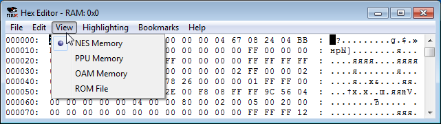
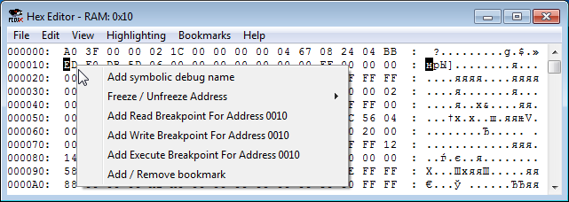
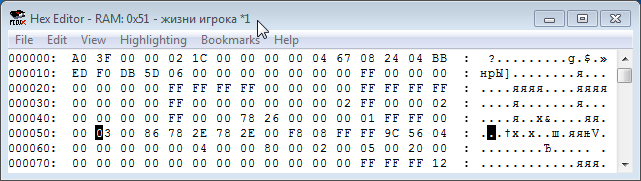
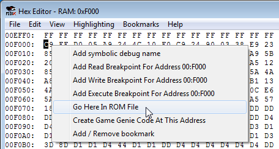
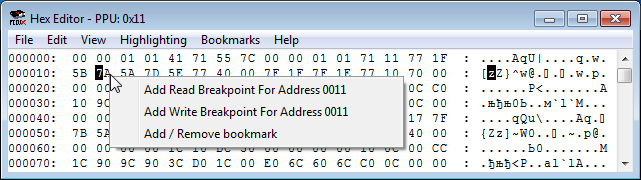
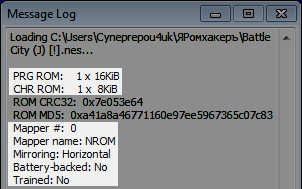
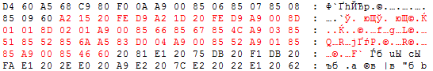
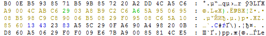

Содержание
Можно переключиться на 4 разных режима отображения памяти.

Выбери опцию вкладки View, чтобы посмотреть по ней подробную информацию.
| NES Memory | PPU Memory | OAM Memory | ROM File |
Под "размером окна" подразумевается самый первый и самый последний адрес, на которые можно перейти.
Этот режим отображает память процессора. Размер окна $0000-$FFFF.
На адреса NES Memory можно ставить Read, Write и Execute брейкпоинты, кликнув правой кнопкой по адресу (или выделенному диапазону) и выбрав соответствующий Add Breakpoint.

Также можно добавлять комментарии на адрес, выбрав опцию Add symbolic debug name. Комментарий будет отображаться в названии окна после клика по этому адресу.

Старая версия эмулятора не поддерживает символы кириллицы в комментариях.
Подробности о брейкпоинтах и комментариях читай в описании окна Debugger.
Далее будет приводиться описание диапазонов адресов и последствия ручного изменения байтов этих адресов.
Нужно учитывать, что если эмулятор не стоит на паузе и работает в обычном режиме, то байт, который ты пишешь в адрес вручную, в действительности будет записан в Hex Editor лишь в конце кадра. Отсюда следует, что ручная запись байта может привести к иным результатам, нежели если бы ты записал его где-то на протяжении кадра. Это зависит от кода игры, в частности от того, успеет ли код игры прочитать твой введенный байт перед тем, как сам его изменит.
Основная RAM находится в диапазоне $0000-$07FF. Здесь хранятся динамические данные игрового процесса.
Далее идут 3 ее зеркала по адресам $0800-$1FFF. Изменение байтов (включая ручную запись) ображается в основной RAM и в зеркалах одновременно.
При изменении байта, если этот адрес считывается игрой, вероятно ты увидишь некоторые изменения в игре. Это поможет приблизительно определить за что отвечает этот адрес без просмотра кода игры.
Некоторые изменения могут быть незаметны в игре в данный момент, или этот адрес просто не используется игрой, по крайней мере прямо сейчас.
Если твой введенный байт сразу перезаписывается, это значит что код игры сам регулярно записывает байт в этот адрес. Твой введенный байт может и не быть учтен игрой. Потребуется более тщательное расследование через изучение кода.
Диапазон адресов $2000-$3FFF. Регистры $2000-$2007 являются основными, все остальное это их зеркала. В адресах показаны байты, которые были записаны в эти регистры. Ручная запись байтов аналогична непосредственной записи по этим регистрам.
Диапазон адресов $4000-$4015. Ручная запись байтов аналогична непосредственной записи по этим регистрам.
Регистр $4014 относится к видеопроцессору.
Диапазон адресов $4016-$4017. Ручная запись байтов аналогична непосредственной записи по этим регистрам.
Здесь ничего нету, этот диапазон не используется. Ручная запись байта будет сразу перезаписана байтом #$FF.
Эти адреса могут быть использованы как регистры на некоторых мапперах. В эмуляторе в них отображаются некие остаточные байты, связанные с выполненными инструкциями. На это не стоит обращать внимание.
В некоторых играх здесь может находиться батарейка (даже нерабочая), изредка некоторые другие виды памяти. В остальных случаях байты в адресах будут выглядеть в эмуляторе так же, как в $5000-$5FFF.
Диапазон адресов $8000-$FFFF. Здесь находятся банки PRG из ROM File, в которых располагается код и статические данные. Чтобы перейти на адрес местоположения байта в ROM File, кликни на нем правой кнопкой и выбери Go Here In ROM File.

После чего Hex Editor переключится в View -> ROM File, и тебя перекинет на нужный адрес.
На некоторых мапперах дублируются диапазоны $8000-$BFFF и $C000-$FFFF. Основным является $C000-$FFFF.
Если регистры маппера и их зеркала находятся в диапазоне $8000-$FFFF, то запись байтов по этим адресам будет аналогична непосредственной записи по этим регистрам. Это позволит удобно вручную переключать банки на некоторых мапперах.
Это младшие и старшие байты адреса обработчика прерываний. $FFFA-$FFFB - вектор NMI, $FFFC-$FFFD - вектор Reset, $FFFE-$FFFF - вектор IRQ/BRK.
Этот режим отображает память видеопроцессора. Размер окна $0000-$3FFF.
На адреса PPU можно ставить Read и Write брейкпоинты, кликнув правой кнопкой по адресу (или выделенному диапазону).

Так как чтение/запись байтов видеопамяти осуществляется через регистр $2006, все брейкпоинты будут срабатывать на инструкциях, работающих с адресом $2006, когда код будет пытаться считать или записать байт по адресу, указанному в условии брейкпоинта.
Подробности о брейкпоинтах читай в описании окна Debugger.
По адресам $0000-$1FFF находятся байты CHR, из которых составляется изображение тайла. Тайлы можно посмотреть в окне PPU Viewer, которое открывается в эмуляторе FCEUX во вкладке Debug.
Каждая из двух таблиц Pattern table размером 4 KB (диапазоны $0000-$0FFF и $1000-$1FFF). Одна из них отвечает за тайлы, а другая за спрайты. Это контролируется регистром видеопроцессора $2000.
Если маппер позволяет переключать банки с тайлами, нельзя вручную изменять байты в этом диапазоне, если не знаешь что делаешь. Для редактирования этих байтов есть тайловые редакторы, например YY-CHR.
Изменив эти байты вручную, ты начнешь изменять изображение тайлов. Эти изменения занесутся напрямую в CHR ROM, и их нельзя будет отменить ни через Ctrl + Z, ни загрузкой сохранения. А если сохранить ROM во вкладке File, изменения окончательно сохранятся в файле. Восстановить можно будет лишь воспользовавшись предварительно сделанной копией файла, скопировав оттуда байты и вставив по нужному месту в подпорченном файле.
Если сильно накосячить в своем коде, может случиться такое, что он начнет записывать байты в видеопамять и перерисовывать тайлы.
Нельзя выловить попытку игры переключить банк CHR ROM с помощью Write брейкпоинта на адрес PPU $0000-$1FFF, поскольку технически переключение банка не является перезаписью некого диапазона адресов другими байтами. Нужно ставить Write брейкпоинт на регистр маппера, через который осуществляется переключение банка.
Nametable - таблица, в которой находятся данные фона, который ты видишь в игре на экране эмулятора. С помощью них рисуется уровень, по которому проходит персонаж.
Каждая из 4-х таблиц размером 1 KB. Первая таблица в диапазоне $2000-$23FF, вторая $2400-27FF, третья $2800-$2BFF, четвертая $2C00-$2FFF. Их можно посмотреть в окне Name Table Viewer, которое открывается в эмуляторе FCEUX во вкладке Debug.
В большинстве случаев есть 2 основных таблицы и 2 их зеркала. Тип зеркаливания контролируется регистром маппера, отвечающим за Mirroring, либо хедером. При Horizontal Mirroring зеркалом 1-й таблицы является 2-я, а при Vertical - 3-я.
Mirroring по большей части выбирается исходя из того, как именно будет скроллиться игровой экран.
Первые 960 байтов таблицы являются номерами тайлов, а последние 64 байта являются атрибутом заднего фона, в котором указывается палитра для размера 32x32 пикселя. Если взять в пример первую таблицу, то номера тайлов находятся в $2000-$23BF, а атрибуты в $23C0-$23FF.
У игр региона NTSC не отображаются верхние и нижние 8 пикселей экрана. Это можно временно изменить в Config -> Video -> Drawing area. Но лучше в итоге оставить как есть.
Изменяя байты в этих адресах, можно временно перерисовывать фон и изменять номер используемой палитры. Это поможет определить адрес, в котором находится нужный тайл, чтобы впоследствие поставить на него брейкпоинт. Также это помогает временно вручную сконструировать новый экран/логотип, работая с Nametable как с черновиком.
Пользуйся сохранениями, чтобы вернуть байты в Nametable как было, или чтобы сравнить несколько вариантов переделанного фона.
Палитра фона находится в $3F00-$3F0F, палитра спрайтов в $3F10-$3F1F. Все остальное это их зеркала. Цвета можно посмотреть в окне PPU Viewer (вкладка Debug).
Меняя байты палитры, на экране также будут меняться цвета. Изменяя байт в $3F00 или $3F10, ты изменишь палитру фона.
Иногда игра может сразу перезаписать цвета на свои, если постоянно записывает палитру в видеопамять. В таком случае они скорее всего находятся в RAM, достаточно воспользоваться поиском и пробить по нему несколько байтов, например из адресов $3F01-$3F04, а затем менять байты уже в RAM.
Этот режим отображает память спрайтов. Размер окна $0000-$00FF, а дальнейшее увеличение окна лишь будет показывать зеркала этих адресов.
Область с памятью спрайтов в действительности находятся в RAM, обычно по адресам $0200-$02FF. Режим OAM Memory просто показывает текущее состояние спрайтов из видеопамяти.
Чтобы игра знала где в NES Memory находятся байты для спрайтов, она записывает младший байт адреса (#$00) в регистр $2003, а старший (#$02) в регистр $4014. OAM Memory показывает область из NES Memory исходя из записи в эти регистры видеопроцессора.
В памяти спрайтов находятся данные каждого из 64-х спрайтов, по 4 байта на спрайт, которые отвечают за позицию X, номер тайла, цвет + поворот, и позицию Y соответственно. Итого 256 байтов.
Изменение байтов OAM Memory никак не влияет на байты в соответствующей области RAM. Повлиять на отображение спрайтов на экране через OAM Memory довольно трудно.
Чтобы повлиять на отображение спрайтов через OAM Memory, нужно дождаться записи байта в регистр $4014, а только потом изменять байты. Этого нельзя добиться без использования Debugger'а и если эмулятор не на паузе. И в любом случае это слишком неудобно, гораздо проще изменять байты в NES Memory.
Чтобы воспользоваться памятью спрайтов как черновиком для временного рисования своих спрайтов на экране, нужно изменять байты в NES Memory, а не в OAM Memory. Поставь эмулятор на паузу, измени байты и заморозь их.
Поскольку в подавляющем большинстве случаев игры ежекадрово перезаписывают байты в этих адресах, без заморозки байтов на паузе вряд ли получится толком что-то изменить или увидеть.
Этот режим отображает байты из файла ROM'а как в любом другом Hex-редакторе (за некоторым исключением). Размер окна варьируется от размера ROM'а и наличия CHR.
В статьях адреса из ROM File будут записаны пятью символами и с префиксом 0x, чтобы отличать их от адресов NES Memory.
Самая первая строчка является хедером, которая содержит информацию для эмулятора, чтобы тот знал как именно эмулировать данный файл. Расшифровку байтов хедера можно посмотреть в эмуляторе через Help -> Message Log.

При попытке изменить байт в хедере, эмулятор не позволит тебе это сделать и предложит воспользоваться окном iNES Header Editor (вкладка Debug в эмуляторе FCEUX).
Если вставить в хедер байты из буфера обмена, сообщение с предложением будет выскакивать столько раз, сколько байтов хедера ты в итоге попытался ими изменить.
Если не знаешь что делаешь, не стоит редактировать байты хедера. Хедер нужно редактировать при изменении маппера и расширении ROM'а.
Далее идут байты памяти PRG ROM, начиная с 0x00010. Размер PRG определяется хедером.
С учтетом размера PRG, после него идут байты CHR ROM. Если в игре нету CHR ROM, значит она использует CHR RAM, и последние 8 KB в окне будут дублировать диапазон $0000-$1FFF из PPU Memory, изменение которых будет также изменять и байты PPU Memory.
CHR RAM вкратце означает, что байты для тайлов, которые находятся в PRG и скорее всего хранятся в сжатом формате, будут вручную записаны в видеопамять после распаковки. В этом есть свои преимущества и недостатки.
Ручное изменение байтов в ROM File подсвечивается красным цветом.

Подсветку можно использовать в личных целях, например чтобы отметить начало и конец некого участка с байтами. Кликни на байт, затем нажми Ctrl + C и Ctrl + V.
Изменения байтов отменяются через Ctrl + Z (или во вкладке Edit). Комбинацию можно удерживать чтоб отменить изменения быстрее. При нажатии комбинации Hex Editor перемещает тебя в ROM File к месту отмены изменения, если это место вне видимости или если включен другой режим во вкладке View, и произойдет отмена одного изменения.
Такой "телепорт" к месту отмены изменения можно использовать в качестве закладки для быстрого перехода к тому месту, где ты редактируешь байты, например когда тебе нужно посмотреть на адреса RAM. Скопируй любой байт поблизости и вставь его по тому же месту. Лучше несколько раз для страховки, просто кликай по байту и жми Ctrl + V.
Если открыть другой ROM без предварительного сохранения изменений, красная подсветка байтов останется, однако байты превратятся в байты текущего ROM'а. Твои проделанные изменения потеряются и не будут влиять на эту игру.
При работе с окном Code/Data Logger (вкладка Debug в эмуляторе FCEUX), байты, которые были каким-либо образом использованы в игре, будут иметь цветную подсветку. Остальные байты останутся черного цвета.

Поскольку содержимое ROM File обновляется только при взаимодействии пользователя с окном Hex Editor, для отслеживания обновления подсветки нужно, например, кликать на байты или нажимать стрелки на клавиатуре.
Подробнее узнаешь в разделе с окном Code/Data Logger.